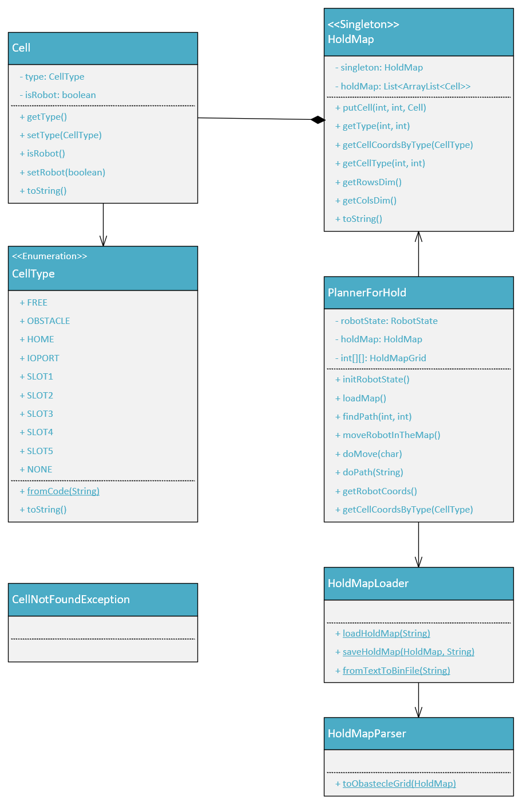

ISS Final Project - Maritime Cargo
Final exam theme a.a. 2024/2025
1. Introduction
A Maritime Cargo shipping company intends to automate the operations of load of
freight in the ship’s cargo hold. To this end, the company plans to employ a
Differential Drive Robot for the loading of goods in the ship's hold.
1.1 Our motto
There is no code without a project,
there is no project without problem analysis,
there is no problem without requirements.
1.2 Model architecture from sprint0

Figure 0 – Model architecture
1.3 Further clarifications from the customer
After the conversation with the customer after sprint0, the two open issues have been clarified:
- There is one more entity in the system, a client, that gives input for product creation, deletion and load
- When the system is stopped, new load requests must be queued; the system failure is supposed to be temporary
Furthermore, the customer has clarified that we can suppose that the order in which containers wait at the ioport is the same as that of load requests; those requests can be sent in any order and are indipendent to each other.
1.4 Aims of sprint1
The aims of the current sprint are:
2. Requirements formalization
Within this sprint, we will be focusing on the requirements RF1, RF2,
RF3, RF4,
RF7, RF8,
RF9, RF13,
RF14, RF15,
RF16 and RF17.
The core business runs on the contexts ctxcargorobot and ctxcargoservice.
The starting point of the current sprint are the following tables, resulting from the requirement analysis from sprint0:
2.4 Working area
The robot will move around the following working area:

Figure 1 – Working area
The relevant areas are:
- HOME: upper left corner in which the robot has to stay when it's in idle
- ioport: opening in the lower left border from which the robot retrieves the containers
- slot{1..4}: they're the designated areas where the robot has to leave the containers
- slot5: permanently occupied area that the robot has to avoid
3. Problem analysis
3.1 Cargorobot
The implementation of cargorobot poses many challenges.
Problem: show a prototype of the robot to the customer
The realization of a physical robot in the early stage of development, for the purpose of prototyping, is too expensive.
Therefore, for this purpose we're gonna use VirtualRobot, an emulator of a DDR robot that our software house has already develop.
It also features a virtual interface that allows BasicRobot to communicate with it and a virtual environment (WEnv) that can be used to show to the customer how the robot moves and works around the hold.
Figure 2 – VirtualRobot's WEnv
3.1.1 Hold area representation and knowledge
Problem: cargorobot has to know the location of his home spot and where the ioport, the slots and the obstacles are.
In order to represent its map in a machine-understandable way, the hold area will be simplified as a matrix of M rows and N columns where every cell is the size of the robot.
Our software house has already developed a software component, named Mapper, that moves a DDR robot around an area in order to explore it and learn its configuration;
the produced output is a text file with a grid of symbols, each representing a cell. Notable position will be than manually reported and each cell will be either marked as a:
- 0: meaning that the cell has never been explored
- 1: meaning that the cell is free and is not part of any specific area
- X: meaning that the cell is occupied by an obstacle
- H: indicating the HOME cell
- I: meaning that the lower edge of the cell is part of the ioport
- {A-E}: meaning that the cell is part of a SLOT, where the matching between a letter and the slot's number is immediate (A->1, B->2, ...)
3.1.2 Cargorobot movement
Problem: implementation of the software that moves the robot
The implementation of this software from scratch would be very time consuming and possibly tricky.
However, our software house has already developed BasicRobot,
a system built using the Qak language that can drive a DDR robot.
Problem: how does cargorobot evaluate the path to follow in order to complete a load task?
Our software house has already developed a software component, named Planner, that implements the A* algorithm in order to find a path to a goal translates it in a sequence of machine-understandable commands.
N.B: this time it is NOT given as an already built actor.
3.1.3 Cargorobot's many components
Question: who's who?
Summarizing, the following are the main entities involved in the realization of Cargorobot.
| Name |
Type |
Function |
| cargorobot |
Actor |
High-level component that wraps the functionality of the robot from the point of view of the system; it can be modeled after BasicRobot |
| Mapper |
Actor |
Software component that utilizes a DDR robot in order to map an area (i.e. the hold) |
| Planner |
Actor |
Software component that calculate a path for the DDR robot to follow in order to reach a specific goal |
| DDR robot |
The actual (physical) robot |
A robot that has two driving wheels, that can move indipendently (hence the Differential Drive technique) on one axle and a third wheel on a second axle.
For the purpose of this project we're gonna use a simplified version where the robot can move forward and backward, stop and rotate left and right of 90° |
| VirtualRobot |
Virtual emulator |
A virtual robot that moves in a virtual environment, called WEnv, and can be used in the prototyping phase |
3.2 Database
The customer has requested a database system that will manage the persistence of registered products (RF17).
To this end, we chose to adopt MongoDB, a NoSQL database that utilize JSON-like documents in order to represent items (in this case, products); this characteristic will be convenient when we'll have to process data within our system.
3.3 Interactions
3.3.1 Messages format
Problem: translating JSON to/from Product POJO
MongoDB utilizes the JSON format to represent items, but we will develop a POJO that can parse that into/from a Product bean, incapsulating the information of a given product.
3.3.2 Creation/Deletion of a product
Problems:
how does the system manage creation requests of a product item already present in the DB?
how does the system manage deletion requests of a product item that is not in the DB?
When it is not possible to satisfy a creation or a deletion request (either because an item is already or is not in the DB, respectively) the system will use a known value instead of the product's PID.
3.3.3 Load request
Problem: when does the system accept or reject a load request?
cargoservice accept a load request if:
- The requested product, identified by its PID, is already present in the DB
- There is a free slot available
- The added weight by the product must be so that the total weight on the hold would be less or equal to MAX_WEIGHT
- The system isn't stopped by the alarm system (this feature will be addressed in a future sprint)
When a new load request arrives, cargoservice verifies if the product is present in the DB;
if so, it then evaluates the hold condition. When all these checks have been successful, it then accepts the request;
otherwise, it rejects it.
3.3.4 Logical architecture
After the problem analysis the following is the logical architecture of the core business of the system.

Figure 4 – Logical architecture
Qak model of the logical architecture.
4. Project
Since the implementation of the core business of the system is quite an heavy task, we decided to split the work in three subparts:
- Part 1: HoldPlanner, hold map management and robot movement
- Part 2: MongoDB, adoption and implementation of a middleware
- Part 3: Maritime cargo's core business implementation
4.1 Part 1: HoldPlanner project, hold map management and robot movement
In 2023 our software house developed unibo.planner23, a software component that can calculate a path for a DDR robot to follow in order to reach a given target in a room.
It also recently developed a Java class that implements the A* algorithm in order to find a path, called AStarPathfinding.
The first one is not strictly compatible with the task of searching a path for cargorobot to follow in order to load a container in a given slot, but it can be somewhat usefull for the development of a dedicated planner for the hold, named PlannerForHold,
i.e. a new software component that will calculate the paths for any target on the hold (i.e. the home spot, the ioport and the four available slots) using the A* algorithm. It will be a POJO and it will be used by the cargorobot actor.
The state of the robot will be encapsulated in RobotState, another simple POJO developed by our software house.
We also have to introduce other entities to give an object oriented representation of the hold and a way to create and parse a machine-understandable map; those classes are:
- Cell: a simple java bean representing a single cell of the hold map's grid
- CellType: an enumerative containing every possible identification for a Cell, i.e. FREE, OBSTACLE, HOME, IOPORT or one of the SLOTS (either one of the four available or the fifth)
- HoldMap: a singleton object that is a collection of Cell(s); since the dimensions of the hold are not predetermined il will encapsulate a list of lists of Cell(s) dinamically allocated
- HoldMapLoader: a convenience class that reads and saves the hold's map in two form, a binary file containing an HoldMap object and a text representation of it
- HoldMapParser: a convenience class that parses a HoldMap so that it can be used by the planner (i.e. a "simplified" grid version that containes only two types of cell, either an obstacle or a "walkable" one)

Figure 5 – HoldPlanner's class diagrams
4.2 Part 2: MongoDB, adoption and implementation of a middleware
We integrated MongoDB into the system architecture as a persistent data storage solution for managing cargo hold state
and tracking the system’s current load. This integration enables reliable, scalable, and decoupled data management
in support of dynamic cargo operations.
To interface with MongoDB, we introduced a middleware, named dbdriver, that
encapsulates MongoDB-specific logic and exposes a high-level API to the rest of the system, ensuring that business logic remains database-agnostic.
This new software component is used by a new Actor, dbwrapper, in order to let the system interact with the DB. Two other main Actors of the system interact with it:
- productservice, in order to carry out its operations
- cargoservice, in order to know if a product for which a load request has been received already exists in the DB
- holdmanager: a newly introduced Actor that is responsible for slot assignment logic and hold's load information management.
It ensures consistency between the logical model of cargo slot's allocation and the physical state reflected in the database.
In order to use MongoDB, the following dependencies needs to be added to the gradle.build file:
implementation 'org.mongodb:mongodb-driver-kotlin-coroutine:4.11.0'
implementation 'org.mongodb:mongodb-driver-reactivestreams:4.11.0'
implementation 'org.jetbrains.kotlinx:kotlinx-coroutines-core:1.7.3'
implementation 'ch.qos.logback:logback-classic:1.4.14'
implementation 'org.slf4j:slf4j-api:2.0.13'
This middleware architecture introduces loose coupling between Actors and persistent storage, enhancing maintainability and testing.
The system is now able to:
- Persist cargo slot and weight data across sessions
- Validate loading constraints
- Dynamically respond to loading requests with up-to-date information
Figure 6 – dbdriver middleware's class diagrams
4.3 Part 3: Maritime cargo's core business implementation
The core business logic of the Maritime cargo system has been implemented primarily
within the cargoservice and productservice QActor.
4.3.1 cargoservice
This actor manages the process of loading products into the ship’s hold.
Below is a description of the main workflow and responsibilities:
-
Load requests:
The cargoservice actor listens for loadProduct requests sent by the client.
When such a request is received, the actor extracts from the message payload.
- Slot availability:
To ensure there is a free slot in the hold, cargoservice queries the holdManager actor
asking for a slot. The reply contains either a valid slot number or indicates that no slots are available.
If no free slot is available (Slot ≤ 0), the request is rejected so the
actor replies to the client with loadRejected.
If a slot is available, the actor proceeds to check the total load weight.
-
Weight check:
The actor requests the current loaded weight. Once it receives the reply it evaluates whether adding the new product
would exceed the MAX_LOAD constraint.
If the new total weight would exceed MAX_LOAD, the request is rejected
and it replies the client with loadRejected, if the load is within acceptable limits,
the load is accepted, then the hold state is updated, by requesting the operation to holdManager,
and loadAccepted is sent to the client.
4.3.2 productservice
This actor provides an interface to manage products, supporting two main operations:
-
createProduct:
the actor recives the request and forward it to dbwrapper, which stores the new product in the database.
When the reply is received, productservice passes the result back to the client, confirming the creation and providing the unique PID.
-
deleteProduct:
the actor receives the request and forward it to dbwrapper, which deletes the product from the database.
When the reply is received, productservice returns the confirmation to the client.
Now, basically it receives requests from external clients and it delegates the persistence logic to the dbwrapper,
which is the real entity in charge of interacting with the underlying database software (MongoDB).
This design ensures that productservice acts purely as a business façade,
decoupled from the storage layer, with no direct dependencies on MongoDB APIs.
Furthermore, productservice is an independent microservice,
fully decoupled from the holdmanager actor.
It operates with its own dedicated database, accessed exclusively through its own dbwrapper, which is distinct and
separate from the one used by the cargoservice.
4.4 Logical architecture of the whole core system
After the project phase, the logical architecture of the system that we developed looks like the following:

Figure 7 – Core business' logical architecture
5. Test plans
| Test |
Involved Actors |
Description |
Files |
| Products' creation and deletion requests |
|
This test verifies if requests of either creation or deletion of products are correctly managed |
Qak: test_productservice.qak
JUnit test: Test_productservice.java
|
| Load request accepted |
- cargoService
- holdManager
- dbwrapper
|
A load request must be accepted if and only if:
- the product is already registered in the DB
- the added product's weight does not result in the hold's weight exceeding MAX_WEIGHT
- there is an available slot
Otherwise, it must be rejected.
|
Qak: test_cargoservice.qak
JUnit test: Test_cargoservice.java
|
Load request rejected
(product is not registered yet) |
- cargoService
- holdManager
- dbwrapper
|
Load request rejected
(product to load is too heavy) |
- cargoService
- holdManager
- dbwrapper
|
Load request rejected
(no available slot) |
- cargoService
- holdManager
- dbwrapper
|
| Robot's container loading procedure |
|
cargorobot has to go to the ioport, from there to the assigned slot and back home |
Qak: test_cargorobot.qak
|
6. Conclusions
Starting from the initial analysis conducted during Sprint0, this iteration focused on identifying and implementing
the requirements related to the core business of the application.
Specifically, we developed two middlewares, one to manage the hold mapping logic and represent the ship’s storage structure and another one to interact
with the database system responsible for maintaining the state of loaded products and weights.
In addition, the core business services themselves were implemented: productservice, which handles product creation and deletion,
and cargoservice, which coordinates the loading process with proper validation of capacity constraints.
All planned activities were completed within the estimated timeframe, and the implementation milestones for Sprint1
were successfully achieved. During the backlog and problem analysis phases it has emerged the client actor, that will logically need to interact with a user;
for this porpuse, we possibly add the development of a user interface to Sprint3.
This sprint laid the foundation for the next development phases, which are:
- Sprint2 - ioport
- Sprint3 - web-gui
The following one is the updated workplan:
| Sprint |
Start |
End |
Man-hours |
| Sprint2 |
15/07/2025 |
18/07/2025 |
7 |
| Sprint3 |
21/07/2025 |
24/07/2025 |
11 |
Developing Team